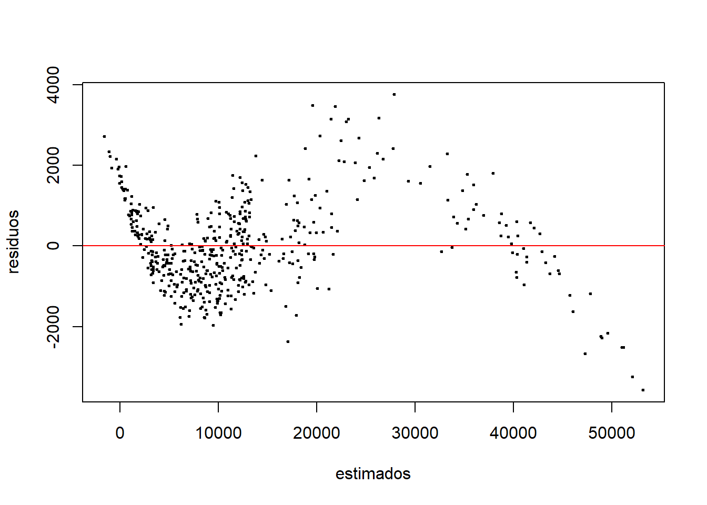
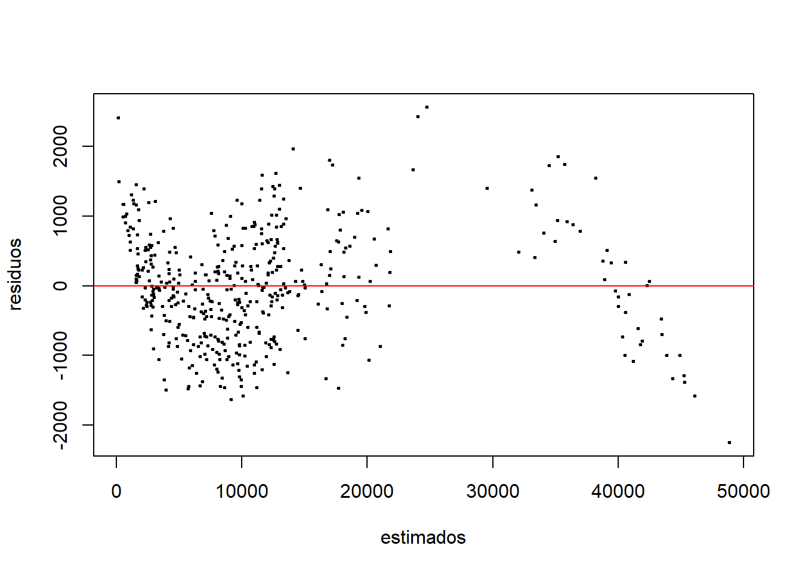

library(dplyr)
library(tidyr)
library(ggplot2)
library(reshape2)Trabajo final
Introducción
Marco del problema
Entre los costos que más desastibilizan económicamente a las personas, se encuentra el pago por procedimientos médicos. Estos precios pueden variar en gran medida dependiendo de características del paciente, como detallaremos más adelante.
En ese sentido, resulta de gran valor predecir adecuadamente el costo que un seguro médico cubrirá, respecto a un procedimiento médico. Para un paciente, aquella predicción puede servir para que planifique qué tanto sería desestabilizado económicamente debido a algún tipo de procedimiento particular. Por otro lado, también para las aseguradoras resulta útil aquellas predicciones, ya que pueden anticipar qué tanto dinero estarían perdiendo por el monto a cubrir de la operación; además, con ese conocimiento pueden monitorear mejor qué pedidos de cobertura resultan anómalos, potencialmente fraudulentos.
Plan de modelamiento
Anteriormente, hemos planteado como variable por predecir a la cantidad monetaria que la aseguradora de un paciente cubrirá debido a un procedimiento médico. Note que aquel monto está muy relacionado al precio que paga el paciente luego que el seguro descuenta parte del costo del procedimiento médico … ese monto, que denominaremos charges, se intentará predecir.
Asimismo, vale recalcar la influencia de los gastos del hospital debido al procedimiento médico, variable que denotaremos Hospital_expenditure, sobre charges.
Para el modelamiento, se considerará además las siguientes características del paciente:
- Sexo (
age) - Si fuma o no (
smoker) - Región de la que provee (
region) - Edad (
age) - Índice de masa corporal (
bmi) - Cantidad de hijos e hijas (
children) - Costo médico que pagaría en caso no se aplicase seguro médico (
Claim_Amount) - Número de procedimientos pasados (
past_consultations) - Número de pasos que realizó en cierto día (
num_of_steps) - Número de veces que ha sido hospitalizado (
Number_of_past_hospitalizations) - Salario anual (
Anual_Salary)
Materiales y métodos
Datos/Observaciones
Las observaciones que consideraremos para este proyecto fueron descargadas de este sitio web.
Estos datos son de distintos pacientes que recibieron algún tipo de tratamiento médico, de los cuales se tienen variables recopiladas, como edad, sexo, si fuma o no, etc. Así, descartamos que los datos consistan de una serie de tiempo.
No obstante, aquella página web no provee información más específica sobre el origen de los datos. Por ejemplo, si han sido recopilados en un único hospital, o en diversos hospitales, pero de qué país, etc.
Aún así, en esta investigación, no solo se considera la predicción de la variable mencionada, sino también cómo es que influyen las variables que emplearemos como regresores, en la predicción final. Por ejemplo, si su relación es directa o inversamente proporcional.
A continuación justificamos el posible uso de los caracteres presentes en los datos, como covariables:
- Sexo: Debido al riesgo y costos distintos entre hombres y mujeres, para ciertos tipos de operaciones; por ejemplo, parto.
- Si fuma o no: Pues fumar aumenta la probabilidad de desarrollar complicaciones médicas
- Región de la que provee: Ya que el costo de un procedimiento médico puede variar mucho por región, así que también varía cuánto cubriría una aseguradora.
- Edad: Puesto que pacientes mayores suelen requerir más cuidados.
- Índice de masa corporal: En base a que un IMC elevado está asociado a mayores riesgos durante cirugías.
- Cantidad de hijos e hijas: Esto puede influir en el tipo de cobertura familiar (de seguro) que tiene el paciente.
- Costo médico que pagaría en caso no se aplicase seguro médico: Importante incluirlo, pues incluso se espera que presente una fuerte correlación positiva con la variable por predecir.
- Número de procedimientos pasados: Puede resultar útil en base a que pacientes con muchos procedimientos suelen tener enfermedades crónicas, por lo que se esperaría una mayor cobertura.
- Número de pasos que realizó en cierto día: Esta variable tampoco se explica en la fuente, pero la podemos considerar como una medida de la condición física de una persona, qué tan activa es.
- Número de veces que ha sido hospitalizado: Pues más hospitalizaciones implican mayor riesgo en la operación, aumentando posiblemente así los costos que cubre la aseguradora.
- Salario anual: Como indicador de nivel socioeconómico, se espera que pacientes con ingresos altos cuenten con aseguradoras que cubren mayor parte el costo por intervención médica.
Itinerario metodológico de la modelización
A continuación, describrimos los pasos a seguir para la construcción de diferentes modelos de predicción:
Descarte de observaciones que presenten algún valor faltante para cualquier variable.
Gráficos de dispersión para pares de variables
Debido al máximo establecido en este proyecto, respecto al número de covariables, calculamos las correlaciones múltiples
Filtro de observaciones al azar, debido a máximo establecido en este proyecto.
Limpieza de datos
Construcción del modelo OLS, empleando todas las covariables
Gráficos de valores observados y residuos contra valores estimados. Interpretar R^2
Emplear el test de Levine y Shapiro para averiguar la homocedasticidad y la normalidad.
En caso positivo, evaluar por medio de ANOVA si el modelo tiene sentido. En caso positivo, determinar qué variables explicativas tienen sentido.
Si se encuentran puntos aberrantes, recorrer el modelo sin aquellos y repetir los pasos mencionados.
Ejecutar los tests de tipo ANOVA
En caso positivo, incluir los tests post-hoc
Resultados
Carga de datos
A continuación, mostramos los datos descargados del sitio web mencionado en la sección previa.
datos <- readr::read_csv("./new_insurance_data.csv")
dplyr::glimpse(datos)Rows: 1,338
Columns: 13
$ age <dbl> 18, 18, 18, 18, 18, 18, 18, 18, 18, 18~
$ sex <chr> "male", "male", "male", "male", "male"~
$ bmi <dbl> 23.21, 30.14, 33.33, 33.66, 34.10, 34.~
$ children <dbl> 0, 0, 0, 0, 0, 0, 0, 0, 0, 0, 0, 0, 0,~
$ smoker <chr> "no", "no", "no", "no", "no", "no", "n~
$ Claim_Amount <dbl> 29087.543, 39053.674, 39023.628, 28185~
$ past_consultations <dbl> 17, 7, 19, 11, 16, 20, 13, 12, 17, 19,~
$ num_of_steps <dbl> 715428, 699157, 702341, 700250, 711584~
$ Hospital_expenditure <dbl> 4720921.0, 4329831.7, 6884860.8, 42747~
$ Number_of_past_hospitalizations <dbl> 0, 0, 0, 0, 0, 0, 0, 0, 0, 0, 0, 0, NA~
$ Anual_Salary <dbl> 55784970, 13700885, 73523107, 75819680~
$ region <chr> "southeast", "southeast", "southeast",~
$ charges <dbl> 1121.874, 1131.507, 1135.941, 1136.399~Descartamos las observaciones con alguna variable faltante.
# Cantidad de observaciones
nrow(datos)[1] 1338# Cantidad de observaciones con alguna variable faltante
sum(!complete.cases(datos))[1] 51datos <- tidyr::drop_na(datos)Filtro de variables
Graficos de dispersión
covariables_numericas <- c(
"age",
"bmi",
"children",
"Claim_Amount",
"past_consultations",
"num_of_steps",
"Hospital_expenditure",
"Number_of_past_hospitalizations",
"Anual_Salary"
)
columnas_numericas <- c(covariables_numericas, "charges")
GGally::ggpairs(datos[, columnas_numericas])
Nótese que la variable por predecir, charges, parece presentar una relación lineal con la covariable Annual_Salary. Asimismo, parece haber indicios de que resulta posible transformar las variables num_of_steps y Hospital_expenditure por funciones logaritmo y exponcial, respectivamente, con fin que se tenga una fuerte relación lineal entre el predictor creado y la variable por predecir.
Correlaciones parciales entre covariables
d.cor <- cor(datos[, covariables_numericas])
d.inv <- solve(d.cor)
d.corm <- sqrt(1-1/diag(d.inv))
pd <- length(d.corm)
d.part <- d.inv
for (i in 1:pd) {
for (j in 1:(i-1)) {
d.part[i,j] <- -d.inv[i,j]/sqrt(d.inv[i,i]*d.inv[j,j])
}
d.part[i,i] <- d.corm[i]
d.part[1:(i-1),i] <- d.part[i,1:(i-1)]
}
d.part age bmi children
age 0.66869810 0.125138033 -0.127797419
bmi 0.12513803 0.283723310 0.027431191
children -0.12779742 0.027431191 0.285534954
Claim_Amount -0.04743308 0.019145260 -0.007971203
past_consultations -0.03242764 0.002848758 0.011798696
num_of_steps 0.58296028 -0.073153318 0.147382251
Hospital_expenditure 0.30690425 0.031794571 0.128345835
Number_of_past_hospitalizations -0.02225606 -0.018175497 0.140432728
Anual_Salary -0.38460223 0.034625132 -0.173171362
Claim_Amount past_consultations num_of_steps
age -0.047433079 -0.032427643 0.58296028
bmi 0.019145260 0.002848758 -0.07315332
children -0.007971203 0.011798696 0.14738225
Claim_Amount 0.439018730 -0.005991357 0.09098912
past_consultations -0.005991357 0.630532156 0.13217102
num_of_steps 0.090989121 0.132171021 0.93080551
Hospital_expenditure -0.016667332 -0.087954734 -0.49727359
Number_of_past_hospitalizations 0.023096940 -0.056723682 0.45898240
Anual_Salary 0.052074797 0.162444557 0.56078648
Hospital_expenditure
age 0.30690425
bmi 0.03179457
children 0.12834583
Claim_Amount -0.01666733
past_consultations -0.08795473
num_of_steps -0.49727359
Hospital_expenditure 0.98147153
Number_of_past_hospitalizations -0.04913622
Anual_Salary 0.95773182
Number_of_past_hospitalizations Anual_Salary
age -0.02225606 -0.38460223
bmi -0.01817550 0.03462513
children 0.14043273 -0.17317136
Claim_Amount 0.02309694 0.05207480
past_consultations -0.05672368 0.16244456
num_of_steps 0.45898240 0.56078648
Hospital_expenditure -0.04913622 0.95773182
Number_of_past_hospitalizations 0.86849267 0.13449231
Anual_Salary 0.13449231 0.98774064vals_diag <- diag(d.part)
max_col_indices <- apply(d.part, 1, which.max)
idx_ordenados <- order(vals_diag, decreasing = TRUE)
ordenados_vals_diag <- vals_diag[idx_ordenados]
ordenados_max_cols <- max_col_indices[idx_ordenados]
data.frame(correlacion_parcial = ordenados_vals_diag) correlacion_parcial
Anual_Salary 0.9877406
Hospital_expenditure 0.9814715
num_of_steps 0.9308055
Number_of_past_hospitalizations 0.8684927
age 0.6686981
past_consultations 0.6305322
Claim_Amount 0.4390187
children 0.2855350
bmi 0.2837233Note que cuatro covariables presentan correlación parcial mayor a 0.8, en orden descendente Anual_Salary, Hospital_expenditure, num_of_steps y Number_of_past_hospitalizations. Aquellas variables son muy explicadas por las demás (posible multicolinearidad).
Inspeccionemos ahora, de manera particular, las correlaciones entre covariables

Observamos una alta correlación entre Anual_Salary y Hospital_expenditure, con un valor de 0.9692177. Asimismo, como la variable de salario anual es más sencilla de recopilar (por ejemplo, en una encuesta) que la de gasto de hospital, descartamos la variable cuantitativa Hospital_expenditure.
datos |>
ggplot(aes(x = Anual_Salary, y = Hospital_expenditure)) +
geom_point(color = "steelblue", alpha = 0.6) +
labs(x = "Salario anual", y = "Gasto del hospital") +
theme_minimal()Variable cuantitativa num_of_steps
Inicialmente se consideró descartar la variable referente al número de pasos que realizó el paciente en cierto día. Esto pues, a primera vista, no se esperaría que tal información resulte relevante para el costo final por el procedimiento médico.
Graficamos tal posible regreso contra la variable respuesta:
datos |>
ggplot(aes(x = num_of_steps, y = charges)) +
geom_point(color = "steelblue", alpha = 0.6) +
labs(x = "Número de pasos", y = "Pago final") +
theme_minimal()
En base a que la relación parece asemejarse a una exponencial, graficamos la variable num_of_steps contra el logaritmo de la variable respuesta:
datos |>
dplyr::mutate(scaled_rsp = log(charges)) |>
ggplot(aes(x = num_of_steps, y = scaled_rsp)) +
geom_point(color = "steelblue", alpha = 0.6) +
labs(x = "Número de pasos", y = "Pago final") +
theme_minimal()
En base a que aquella relación parece ser aproximadamente lineal, optamos por no descartar la variable cuantitativa num_of_steps.
Variable cuantitativa num_of_steps
datos |>
ggplot(aes(x = num_of_steps, y = charges)) +
geom_point(color = "steelblue", alpha = 0.6) +
labs(x = "Número de pasos", y = "Pago final") +
theme_minimal()Variable cuantitativa age
datos |>
ggplot(aes(x = age, y = charges)) +
geom_point(color = "steelblue", alpha = 0.6) +
labs(x = "Edad", y = "Pago final") +
theme_minimal()Variable cuantitativa bmi
datos |>
ggplot(aes(x = bmi, y = charges)) +
geom_point(color = "steelblue", alpha = 0.6) +
labs(x = "Índice de masa corporal", y = "Pago final") +
theme_minimal()Variable cuantitativa children
datos |>
ggplot(aes(x = children, y = charges)) +
geom_point(color = "steelblue", alpha = 0.6) +
labs(x = "Número de hijos", y = "Pago final") +
theme_minimal()
Variable cuantitativa past_consultations
datos |>
ggplot(aes(x = past_consultations, y = charges)) +
geom_point(color = "steelblue", alpha = 0.6) +
labs(x = "Número de procedimientos pasados", y = "Pago final") +
theme_minimal()
Descartamos la variable cuantitativa children, pues, en base a este simple análisis inicial, no parece indicar algún de tipo de relación lineal con la variable por predecir. Es más, su gráfico de dispersión parece sugerir que consideremos a la variable children como cualitativa.
Variables categóricas
Para el filtro de variables categóricas, descartaremos aquella para la cual las distribuciones de la variable respuesta, respecto a los valores de aquella variable categórica sean relativamente similares.
Variable cualitativa region
Inspeccionamos la distribución de la variable respuesta, respecto a los valores de la variable categórica region.
datos |>
ggplot(aes(x = charges, color = region, fill = region)) +
geom_density(alpha = 0.4) +
labs(
title = "Densidad de 'charges' para cada categoría de 'region'",
x = "charges",
y = "Densidad"
) +
theme_minimal()
En base a que aquellas funciones densidad no presentan una difencia resaltante, descartaremos la variable region. De esa manera, las variables cualitativas que emplearemos para esta investigación son solo sex y smoker.
Variables finales
- Variables cualitativas:
sexsmoker
- Variables cuantitativas:
agebmiClaim_Amountpast_consultationsnum_of_stepsNumber_of_past_hospitalizationsAnual_Salarycharges(variable respuesta)
Para limitarnos a 500 filas, según la restricción de este proyecto, realizaremos un muestreo:
obs <- datos |>
dplyr::select(
sex,
smoker,
age,
bmi,
Claim_Amount,
past_consultations,
num_of_steps,
Number_of_past_hospitalizations,
Anual_Salary,
charges
)
set.seed(1234)
obs <- dplyr::sample_n(obs, 500)
openxlsx::write.xlsx(obs, './datos.xlsx')Modelamiento
Note que los tipos de datos de las covariables son adecuadas. En particular, las funciones por emplear se encargarán de la conversión numérica a las covariables categóricas age y sex.
dplyr::glimpse(obs)Rows: 500
Columns: 10
$ sex <chr> "male", "female", "male", "female", "m~
$ smoker <chr> "no", "no", "yes", "no", "no", "no", "~
$ age <dbl> 28, 40, 33, 48, 63, 48, 59, 38, 63, 22~
$ bmi <dbl> 33.820, 41.420, 27.100, 28.880, 31.445~
$ Claim_Amount <dbl> 24107.866, 27534.303, 39952.923, 45755~
$ past_consultations <dbl> 18, 15, 27, 24, 14, 18, 18, 12, 11, 8,~
$ num_of_steps <dbl> 983349, 1031312, 996320, 912509, 95335~
$ Number_of_past_hospitalizations <dbl> 1, 2, 1, 1, 1, 1, 1, 1, 1, 0, 2, 1, 1,~
$ Anual_Salary <dbl> 481649496, 869010594, 453727467, 17846~
$ charges <dbl> 19673.336, 28476.735, 19040.876, 9249.~Comencemos definiendo algunas funciones auxliares en el análisis y modelamiento.
sum.lm <- function(lmod) {
summ <- summary(lmod)
ci <- confint(lmod)
summ$coefficients <- cbind(
summ$coefficients[,1],
ci,summ$coefficients[,2:4]
)
return(summ)
}
extraer_estadistica_f <- function(modelo) {
return(summary(modelo)$fstatistic[1])
}
obtener_p_valor_de_estadistica_f <- function(modelo) {
s <- summary(modelo)
fval <- s$fstatistic["value"]
df1 <- s$fstatistic["numdf"]
df2 <- s$fstatistic["dendf"]
return(pf(fval, df1, df2, lower.tail = FALSE))
}
extraer_info_t_student <- function(modelo) {
df <- as.data.frame(summary(modelo)$coefficients)
df <- df[-1, c(-1, -2)]
df$es_significativo <- df[, 2] < 0.05
return(df)
}
# Implementación básica de la función car::ncvTest, debido a que
# no me funciona descargar aquella librería.
ncvTest <- function(modelo, variable = NULL) {
# Verifica si el modelo es lineal
if (!inherits(modelo, "lm")) stop("El modelo debe ser de clase 'lm'")
# Extrae los residuos y los valores ajustados
residuos <- residuals(modelo)
ajustados <- fitted(modelo)
# Selecciona la variable de prueba
if (is.null(variable)) {
z <- ajustados # por defecto, se usa contra los valores ajustados
} else {
datos_modelo <- model.frame(modelo)
z <- datos_modelo[[variable]]
if (is.null(z)) stop("Variable no encontrada en el marco del modelo")
}
# Calcula la estadística de prueba
score <- sum(residuos^2 * z)
informacion <- sum((residuos * z)^2)
estadistico <- score^2 / informacion
# Calcula el valor p
valor_p <- 1 - pchisq(estadistico, df = 1)
# Devuelve como objeto de prueba
resultado <- list(statistic = estadistico, p.value = valor_p)
class(resultado) <- "htest"
return(resultado)
}
resaltar_n_puntos_con_mayor_apalancamiento <- function(modelo, n = 10) {
graficos <- list()
observaciones <- modelo$model[[1]]
estimaciones <- modelo$fitted.values
graficos$est_vs_obs <- function () {
abs_resid <- abs(observaciones - estimaciones)
top10_idx <- order(abs_resid, decreasing = TRUE)[1:n]
plot(
estimaciones,
observaciones,
col = ifelse(1:length(observaciones) %in% top10_idx, "red", "black"),
pch = 19,
xlab = "estimaciones",
ylab = "observaciones"
)
abline(a = 0, b = 1, col = "blue", lty = 2)
abline(lm(observaciones ~ estimaciones), col = "darkgreen", lwd = 2)
}
graficos$est_vs_res <- function () {
residuos <- modelo$residuals
abs_resid <- abs(residuos)
top10_idx <- order(abs_resid, decreasing = TRUE)[1:n]
plot(
estimaciones,
residuos,
col = ifelse(1:length(residuos) %in% top10_idx, "red", "black"),
pch = 19,
xlab = "estimaciones",
ylab = "residuos"
)
abline(h = 0, lty = 2, col = "blue")
}
return(graficos)
}
calcular_rse <- function(modelo) {
k <- length(modelo$coefficients) - 1
SSE <- sum(modelo$residuals**2)
num_obs <- length(modelo$residuals)
return(sqrt(SSE/(num_obs - (1+k))))
}Modelo completo
modelo_completo <- lm(charges ~ ., obs)
sum.lm(modelo_completo)
Call:
lm(formula = charges ~ ., data = obs)
Residuals:
Min 1Q Median 3Q Max
-3574.8 -728.0 -121.6 631.4 3762.3
Coefficients:
2.5 % 97.5 % Std. Error
(Intercept) -4.223e+04 -4.430e+04 -4.016e+04 1.055e+03
sexmale 1.018e+02 -9.310e+01 2.967e+02 9.919e+01
smokeryes 3.807e+02 -1.072e+02 8.686e+02 2.483e+02
age -2.649e+01 -3.670e+01 -1.628e+01 5.196e+00
bmi -1.680e+01 -3.465e+01 1.046e+00 9.083e+00
Claim_Amount 2.238e-03 -4.649e-03 9.125e-03 3.505e-03
past_consultations 7.868e-01 -1.567e+01 1.725e+01 8.378e+00
num_of_steps 5.771e-02 5.491e-02 6.051e-02 1.427e-03
Number_of_past_hospitalizations -1.022e+03 -1.405e+03 -6.391e+02 1.950e+02
Anual_Salary 1.451e-05 1.411e-05 1.490e-05 2.028e-07
t value Pr(>|t|)
(Intercept) -40.029 < 2e-16 ***
sexmale 1.026 0.305
smokeryes 1.533 0.126
age -5.097 4.93e-07 ***
bmi -1.850 0.065 .
Claim_Amount 0.639 0.523
past_consultations 0.094 0.925
num_of_steps 40.434 < 2e-16 ***
Number_of_past_hospitalizations -5.242 2.37e-07 ***
Anual_Salary 71.542 < 2e-16 ***
---
Signif. codes: 0 '***' 0.001 '**' 0.01 '*' 0.05 '.' 0.1 ' ' 1
Residual standard error: 1092 on 490 degrees of freedom
Multiple R-squared: 0.991, Adjusted R-squared: 0.9908
F-statistic: 5977 on 9 and 490 DF, p-value: < 2.2e-16En base al valor del \(R^2\), note que este modelo explica alrededor del 99.1% de la varianza de charges.
plot(
modelo_completo$fitted.values,
obs$charges,
xlab ="Estimados",
ylab="Observados",
pch=20,
cex=0.5
)
abline(0,1,col="red")
plot(
modelo_completo$fitted.values,
modelo_completo$residuals,
xlab ="estimados",
ylab="residuos",
pch=20,
cex=0.5
)
abline(h=0,col="red")
Tests
Prueba de homocedasticidad
ncvTest(modelo_completo)
data:
= 351173941, p-value < 2.2e-16En base al p-valor menor a 0.05, se tiene suficiente evidencia de que la varianza de los residuos no es constante, es decir, no se cumple la homocedasticidad.
Prueba de normalidad de los errores
qq_completo <- qqnorm(modelo_completo$residuals)
qqline(modelo_completo$residuals)shapiro.test(modelo_completo$residuals)
Shapiro-Wilk normality test
data: modelo_completo$residuals
W = 0.98331, p-value = 1.677e-05En base al p-valor menor a 0.05, contamos con suficiente evidencia para afirmar que los residuos no siguen una distribución normal.
shapiro.test(rstandard(modelo_completo))
Shapiro-Wilk normality test
data: rstandard(modelo_completo)
W = 0.98249, p-value = 1.01e-05Al ejecutar el test para los residuos estandarizados, se llega a la misma conclusión respecto a la normalidad de los residuos.
Como se ha fallado en ambos tests, no estamos en condición formal de aplicar ANOVA. Sin embargo, inspeccionemos su resultado de todas maneras, según la tabla de análisis de la varianza.
anova(modelo_completo)Analysis of Variance Table
Response: charges
Df Sum Sq Mean Sq F value Pr(>F)
sex 1 5.6614e+08 5.6614e+08 474.88 < 2.2e-16
smoker 1 3.9087e+10 3.9087e+10 32786.75 < 2.2e-16
age 1 7.7570e+09 7.7570e+09 6506.60 < 2.2e-16
bmi 1 1.6345e+09 1.6345e+09 1371.07 < 2.2e-16
Claim_Amount 1 6.8192e+08 6.8192e+08 572.00 < 2.2e-16
past_consultations 1 1.3044e+09 1.3044e+09 1094.15 < 2.2e-16
num_of_steps 1 6.3277e+09 6.3277e+09 5307.70 < 2.2e-16
Number_of_past_hospitalizations 1 6.6481e+08 6.6481e+08 557.65 < 2.2e-16
Anual_Salary 1 6.1018e+09 6.1018e+09 5118.27 < 2.2e-16
Residuals 490 5.8416e+08 1.1922e+06
sex ***
smoker ***
age ***
bmi ***
Claim_Amount ***
past_consultations ***
num_of_steps ***
Number_of_past_hospitalizations ***
Anual_Salary ***
Residuals
---
Signif. codes: 0 '***' 0.001 '**' 0.01 '*' 0.05 '.' 0.1 ' ' 1extraer_estadistica_f(modelo_completo) value
5976.563 obtener_p_valor_de_estadistica_f(modelo_completo)value
0 Como el p-valor es mucho menor que 0.05, concluimos que este modelo tiene sentido. En particular, existe alguna covariable que explica significativamente la varianza asociada a charges.
extraer_info_t_student(modelo_completo) t value Pr(>|t|) es_significativo
sexmale 1.02617973 3.053132e-01 FALSE
smokeryes 1.53299676 1.259220e-01 FALSE
age -5.09735180 4.927953e-07 TRUE
bmi -1.84969716 6.495914e-02 FALSE
Claim_Amount 0.63850065 5.234461e-01 FALSE
past_consultations 0.09390782 9.252208e-01 FALSE
num_of_steps 40.43404893 3.256649e-158 TRUE
Number_of_past_hospitalizations -5.24178980 2.368235e-07 TRUE
Anual_Salary 71.54209305 1.626762e-261 TRUEPor otro lado, según este otro test, solo se puede afirmar para las variables age, num_of_steps, Number_of_past_hospitalizations y Anual_Salary que tienen sentido en el modelo.
Puntos aberrantes
modelo_completo.cd <- cooks.distance(modelo_completo)
modelo_completo.mcd<- mean(modelo_completo.cd)Puntos más lejos de 3 promedios
modelo_completo.cooked_1 <- which(modelo_completo.cd > 3*modelo_completo.mcd)
modelo_completo.cooked_1 2 11 14 19 29 31 68 78 85 106 129 138 162 168 223 225 240 242 258 260
2 11 14 19 29 31 68 78 85 106 129 138 162 168 223 225 240 242 258 260
267 292 299 316 329 331 347 362 365 373 385 396 412 449 453 455 486 496
267 292 299 316 329 331 347 362 365 373 385 396 412 449 453 455 486 496 Según aquel criterio, se tienen 38 puntos aberrantes … una cantidad significativa.
Puntos más lejos de cuatro veces los regresores
modelo_completo.cooked_2 <- which(modelo_completo.cd > (4 / dim(obs)))
modelo_completo.cooked_2 11 19 29 31 85 129 223 225 263 267 299 329 331 347 365 373 385 449 453 455
11 19 29 31 85 129 223 225 263 267 299 329 331 347 365 373 385 449 453 455 Según este otro criterio, se tienen 20 puntos aberrantes, también una cantidad significativa.
Mayores apalancamientos: Resaltamos en rojo los 10 puntos con mayor apalancamiento.
modelo_completo.graficos_apalancamiento <- resaltar_n_puntos_con_mayor_apalancamiento(modelo_completo, 10)
modelo_completo.graficos_apalancamiento$est_vs_obs()modelo_completo.graficos_apalancamiento$est_vs_res()Modelo tras remover puntos aberrantes
obs_sin_aber <- obs[-modelo_completo.cooked_1,]
obs_sin_aber# A tibble: 462 x 10
sex smoker age bmi Claim_Amount past_consultations num_of_steps
<chr> <chr> <dbl> <dbl> <dbl> <dbl> <dbl>
1 male no 28 33.8 24108. 18 983349
2 male yes 33 27.1 39953. 27 996320
3 female no 48 28.9 45756. 24 912509
4 male no 63 31.4 34046. 14 953355
5 male no 48 34.3 36944. 18 926940
6 female no 59 32.4 44302. 18 940460
7 male no 38 34.7 8821. 12 880463
8 female no 63 31.8 26904. 11 954102
9 female no 22 24.3 5289. 8 764144
10 female no 54 31.9 41178. 24 919493
# i 452 more rows
# i 3 more variables: Number_of_past_hospitalizations <dbl>,
# Anual_Salary <dbl>, charges <dbl>mod_com_2 <- lm(charges ~ ., obs_sin_aber)
sum.lm(mod_com_2)
Call:
lm(formula = charges ~ ., data = obs_sin_aber)
Residuals:
Min 1Q Median 3Q Max
-2250.13 -580.13 -19.38 534.20 2564.82
Coefficients:
2.5 % 97.5 % Std. Error
(Intercept) -4.026e+04 -4.196e+04 -3.857e+04 8.628e+02
sexmale -3.150e+01 -1.801e+02 1.172e+02 7.564e+01
smokeryes 8.137e+02 3.846e+02 1.243e+03 2.183e+02
age -1.011e+01 -1.887e+01 -1.348e+00 4.457e+00
bmi -9.743e+00 -2.315e+01 3.664e+00 6.823e+00
Claim_Amount -1.612e-03 -6.884e-03 3.660e-03 2.683e-03
past_consultations 4.894e+00 -7.653e+00 1.744e+01 6.384e+00
num_of_steps 5.521e-02 5.288e-02 5.754e-02 1.185e-03
Number_of_past_hospitalizations -1.900e+03 -2.209e+03 -1.591e+03 1.574e+02
Anual_Salary 1.546e-05 1.510e-05 1.581e-05 1.817e-07
t value Pr(>|t|)
(Intercept) -46.665 < 2e-16 ***
sexmale -0.416 0.677332
smokeryes 3.726 0.000219 ***
age -2.268 0.023820 *
bmi -1.428 0.153950
Claim_Amount -0.601 0.548244
past_consultations 0.767 0.443772
num_of_steps 46.586 < 2e-16 ***
Number_of_past_hospitalizations -12.075 < 2e-16 ***
Anual_Salary 85.090 < 2e-16 ***
---
Signif. codes: 0 '***' 0.001 '**' 0.01 '*' 0.05 '.' 0.1 ' ' 1
Residual standard error: 795.8 on 452 degrees of freedom
Multiple R-squared: 0.994, Adjusted R-squared: 0.9939
F-statistic: 8345 on 9 and 452 DF, p-value: < 2.2e-16Note que el porcentaje de varianza explicada aumentó de 99.1% a 99.4%.
calcular_rse(modelo_completo)[1] 1091.864calcular_rse(mod_com_2)[1] 795.7768Asimismo, resaltamos que el residuo promedio es menor en el modelo tras remover puntos aberrantes.
plot(
mod_com_2$fitted.values,
obs_sin_aber$charges,
xlab ="Estimados",
ylab="Observados",
pch=20,
cex=0.5
)
abline(0,1,col="red")
plot(
mod_com_2$fitted.values,
mod_com_2$residuals,
xlab ="estimados",
ylab="residuos",
pch=20,
cex=0.5
)
abline(h=0,col="red")
ncvTest(mod_com_2)
data:
= 167742048, p-value < 2.2e-16El p-valor asociado al test de homocedasticidad prácticamente no ha cambiado.
qq_completo_2 <- qqnorm(mod_com_2$residuals)
qqline(mod_com_2$residuals)shapiro.test(mod_com_2$residuals)
Shapiro-Wilk normality test
data: mod_com_2$residuals
W = 0.99316, p-value = 0.03396shapiro.test(rstandard(mod_com_2))
Shapiro-Wilk normality test
data: rstandard(mod_com_2)
W = 0.9933, p-value = 0.0379Por otro lado, el p-valor asociado al Test de Shapiro aumentó significativamente, de \(1.01e-05\) a \(0.0379\). Este último valor es cercano a 0.05, aunque aún menor, por lo cual se sigue evidenciando la normalidad de los residuos tras haber removido aquellos puntos aberrantes.
En base a estas comparaciones, el modelo tras haber removido los puntos aberrantes resulta mejor que el modelo inicialmente construido.